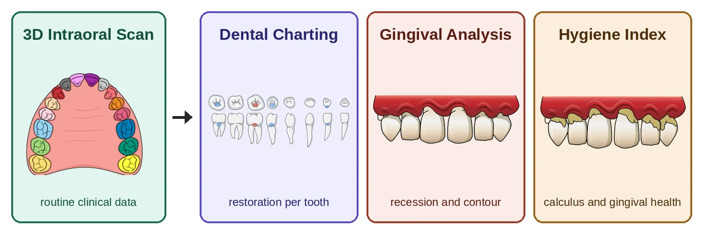

Open position · ARTIS
PhD Position in 3D Deep Learning for Dental Diagnostics
AI-Dent Vienna, University Clinic of Dentistry, Medical University of Vienna
- Start
- January 2027 or by agreement
- Review of applications
- Starts November 23, 2026, open until filled
- Employment
- 30 hours per week, 36 months
- Location
- Vienna, Austria
The project
Clinical findings from routine intraoral scans.
Intraoral scanners capture high-resolution 3D surface models of teeth and gingiva at almost every dental visit. The scans are acquired for treatment planning, and their diagnostic content remains largely unused.
In the project ARTIS (ARTificial Intelligence for InTraoral Scans), funded by the FFG BRIDGE program, we develop deep learning methods that derive clinical findings from these routine scans. The project addresses three tasks, namely automated dental charting, quantification of gingival recession and inflammation, and a new index of oral hygiene quality. Models are trained on scans from the University Clinic of Dentistry Vienna, acquired with different scanner systems, and validated in a prospective patient cohort against clinical measurements. The project is carried out together with two industry partners from dental software.

What you will do
Your role.
- Develop deep learning models for 3D intraoral scans, starting from established point cloud models such as PointNet++ and DGCNN
- Extend these toward graph neural networks that operate directly on the mesh structure of the scans
- Apply explainability methods to show which geometric features drive each prediction
- Validate the models against clinical measurements together with dentists
- Publish and present your results at international conferences
Who we are looking for
Your profile.
If you have worked in 2D computer vision and want to move to 3D data, or have used graph neural networks in other domains such as molecules or physical simulation, this project lets you apply these skills to real clinical data. No prior experience with 3D data or dentistry is required.
Requirements
- Master's degree in computer science, data science, mathematics, physics, biomedical engineering or a related field
- Solid experience with deep learning and Python
- Experience with PyTorch or a similar framework
- Interest in clinical applications of AI
Preferred
- Experience with graph neural networks in any domain
- Experience with point clouds, meshes or 3D data processing
- Experience with PyTorch Geometric or similar libraries
- Familiarity with explainable AI methods
What we offer
What we offer.
- A PhD position at the Medical University of Vienna, 30 hours per week, for the duration of the project (36 months)
- Salary according to the collective agreement for Austrian universities (Uni-KV, salary group B1), currently EUR 2,832 gross per month, paid 14 times per year
- A group of eight PhD students and a postdoc working at the interface of machine learning and dentistry, based inside the dental clinic
- Close collaboration with dentists and with two industry partners
- Access to the high-performance computing cluster of MedUni Vienna
- Travel funding to present your work at international conferences, for example CVPR
How to apply
How to apply.
Please send the following documents as a single PDF to benedikt.sagl@meduniwien.ac.at with the subject line "ARTIS PhD application".
- CV
- Transcripts of your bachelor's and master's degrees
- A short motivation letter (one page) describing your background and why this project interests you
- Optional, a link to code you have written, for example on GitHub, or to your master's thesis
Review of applications starts on November 23, 2026. The position remains open until filled.
For questions, please contact Benedikt Sagl at benedikt.sagl@meduniwien.ac.at.
Apply by emailMedUni Vienna is committed to diversity, inclusion and equal opportunity. The university aims to increase the share of women in academic and leadership positions and explicitly encourages qualified women to apply. Among equally qualified applicants, women will be given preference.